Programación Aplicada

1.4c. Patrones de comportamiento
Autor: Ing. Pablo Torres, Mgtr.
Unidad: 1. Programación genérica
Tema: 1.4. Patrones de diseño · Patrones de comportamiento
Los patrones de comportamiento organizan algoritmos, solicitudes, cambios de estado y colaboraciones entre objetos. Su propósito es asignar responsabilidades para que una variación del comportamiento no obligue a modificar todos los componentes que participan en una operación.
Este material desarrolla los once patrones de comportamiento del catálogo clásico GoF. Cada apartado integra definición, problema, participantes, caso práctico, explicación del Java, flujo de ejecución y análisis. Los archivos Java contienen el código completo y comentado; el material enlaza esos archivos sin duplicar sus implementaciones.
Índice
- Fundamentos y uso del material
- Chain of Responsibility · Validar lecturas por etapas
- Command · Ejecutar y deshacer cambios
- Interpreter · Evaluar reglas de medición
- Iterator · Recorrer un inventario
- Mediator · Coordinar un sistema de ventilación
- Memento · Restaurar un plan de muestreo
- Observer · Notificar nuevas lecturas
- State · Controlar una sesión de muestreo
- Strategy · Seleccionar un cálculo estadístico
- Template Method · Especializar un proceso de importación
- Visitor · Aplicar operaciones a distintos sensores
- Comparación y criterios de elección
- Referencias
1. Fundamentos y uso del material
Un patrón de diseño define una organización de responsabilidades para resolver un problema recurrente. No es una biblioteca, una plantilla de código obligatoria ni una justificación para añadir interfaces sin una variación concreta que aislar.
Los patrones creacionales organizan cómo se proporcionan objetos; los estructurales, cómo se relacionan; los de comportamiento, cómo se distribuyen y ejecutan sus operaciones. Una solución puede combinar varias intenciones. Por ejemplo, Command puede utilizar Memento para conservar el estado necesario para deshacer una acción.
1.1. Conceptos necesarios
| Concepto | Significado | Decisión que exige |
|---|---|---|
| Responsabilidad | Información u operación que corresponde a un componente. | Determinar quién conoce la regla y quién solo coordina. |
| Colaboración | Interacción entre objetos para resolver una operación. | Definir contratos, orden y tratamiento de fallos. |
| Polimorfismo | Selección de una implementación según el tipo concreto del receptor. | Mantener un contrato común y respetar su significado. |
| Estado | Información que condiciona el comportamiento de un objeto. | Establecer valores válidos y transiciones permitidas. |
| Evento | Hecho comunicado a componentes interesados. | Precisar destinatarios, contenido y política de entrega. |
| Algoritmo intercambiable | Una de varias formas de resolver una operación. | Distinguir qué parte cambia y qué contrato permanece. |
| Instantánea | Representación de un estado en un momento determinado. | Definir qué se copia, quién puede leerlo y cuánto tiempo se conserva. |
Compartir una interfaz no garantiza compartir el mismo contrato. Dos estrategias pueden devolver un número, pero deben acordar qué sucede con una colección vacía. Dos observadores pueden recibir el mismo evento, pero la fuente debe definir si un fallo de uno detiene a los demás.
Estos patrones no requieren genéricos. Se utilizan tipos parametrizados donde expresan relaciones útiles, como Iterator<Sensor> o Deque<Comando>. La presencia de un parámetro de tipo no identifica por sí sola un patrón.
1.2. Organización y ejecución
La carpeta contiene material.md, once demostraciones en ejemplos/ y once diagramas Mermaid en assets/. Cada demostración es independiente, no declara un paquete y agrupa sus tipos dentro de una clase ejecutable. Los nombres compartidos entre archivos representan modelos locales a cada ejemplo y no obligan a fusionarlos.
Desde 01/1.4-patrones-genericos/03-comportamiento, ejecuta java ejemplos/StrategyDemo.java. Sustituye ese nombre por el archivo enlazado en el patrón que quieras estudiar. Los ejemplos utilizan características disponibles desde Java 17, no necesitan bibliotecas externas y pueden ejecutarse con el JDK 25 utilizado en la asignatura. La compilación y las salidas incluidas se verificaron con Java 17.
Los .mmd son fuentes editables, no imágenes. Los enlaces permiten abrirlos en un editor compatible con Mermaid. Para mostrarlos como diagramas dentro del sitio, el generador debe procesar su contenido o se deben exportar a SVG. El paquete no incluye exportaciones gráficas ni páginas generadas.
1.3. Lectura de UML y alcance de los ejemplos
Una línea discontinua con triángulo representa la realización de una interfaz; una continua con triángulo, la herencia. Las asociaciones representan referencias conservadas y las dependencias, usos puntuales de tipos u operaciones. Los símbolos +, -, # y ~ indican visibilidad pública, privada, protegida y de paquete.
Los diagramas se concentran en los participantes del patrón. Omiten la clase ejecutable exterior y algunos constructores o accesores. En Iterator aparecen también los contratos de la biblioteca estándar de Java, identificados como tales.
Las demostraciones son secuenciales y utilizan datos simulados. Una aplicación concurrente, persistente o conectada a dispositivos reales requiere decisiones adicionales. El patrón no proporciona automáticamente seguridad entre hilos, transacciones ni recuperación ante fallos externos.
2. Chain of Responsibility · Validar lecturas por etapas
Definición
Chain of Responsibility organiza una solicitud a través de manejadores enlazados. Cada manejador decide qué trabajo realizar y si debe continuar la solicitud hacia el siguiente [1].
Idea principal: separar decisiones de procesamiento en componentes que puedan ordenarse sin que el emisor conozca todos los participantes.
2.1. ¿Qué problema resuelve?
Una lectura necesita identificador, unidad admitida y valor dentro de rango. Concentrar todas las reglas en un método puede resultar suficiente inicialmente, pero dificulta reorganizarlas o reutilizar solo una parte cuando aparecen diferentes procesos de recepción.
Una cadena asigna una regla a cada manejador. El cliente entrega la lectura al primero; no invoca manualmente cada filtro. Cada componente puede continuar o detener la solicitud según el resultado.
Existen cadenas en las que el primer manejador capaz de resolver la petición la consume. La demostración utiliza otra variante: todos los filtros deben aceptar y cualquiera puede detener el proceso. No se debe confundir esta política con la búsqueda de un único responsable.
2.2. Estructura y participantes
| Participante | Responsabilidad |
|---|---|
| Manejador base | Establecer el contrato y conservar el siguiente manejador. |
| Manejador concreto | Resolver una comprobación y determinar si existe un error. |
| Solicitud | Transportar los datos que recorren la cadena. |
| Cliente | Configurar el orden y entregar la solicitud al primer manejador. |
En esta implementación, la clase base concentra la decisión de continuar. Las subclases devuelven el resultado de su comprobación, evitando repetir la lógica de encadenamiento.
2.3. ¿Cuándo utilizarlo?
Conviene para validaciones ordenadas, procesamiento de solicitudes o selección de responsables cuando la secuencia puede variar. Es útil si interesa cambiar el orden o retirar una comprobación sin modificar el emisor.
Si las reglas son pocas, estables y solo se utilizan juntas, un método de validación puede ser más directo. Una cadena también introduce preguntas: qué significa llegar al final, qué ocurre si nadie resuelve la solicitud y cuál error se informa cuando hay varios.
2.4. Caso práctico: recepción de temperaturas
Se admiten lecturas con identificador no vacío, unidad °C y valor finito entre −50 y 100. Los límites están incluidos. El orden es identidad, unidad y rango.
La entrada llega como un record Lectura todavía no validado. Se permite representar datos defectuosos para que la cadena los examine. Esto es una decisión del ejemplo: no significa que todos los modelos del dominio deban permitir estados inválidos.
Una lectura con varios errores produce únicamente el primero. Llegar al final sin errores significa aceptación. No existe un almacenamiento posterior dentro de esta demostración.
2.5. Estructura UML
| Rol | Tipo del ejemplo |
|---|---|
| Manejador base | Filtro |
| Manejadores concretos | FiltroIdentidad, FiltroUnidad, FiltroRango |
| Solicitud | Lectura |
| Resultado | Resultado |
Filtro conserva una referencia opcional a otro Filtro. La multiplicidad 0..1 permite que el último no tenga sucesor. Las tres clases concretas heredan el procedimiento de propagación.
2.6. Implementación del ejemplo en Java
Código completo y comentado: ChainOfResponsibilityDemo.java.
| Tipo | Responsabilidad concreta |
|---|---|
Lectura · record |
Transportar id, valor y unidad sin validar la solicitud anticipadamente. |
Resultado · record |
Comunicar aceptación y motivo de forma explícita. |
Filtro · clase abstracta |
Rechazar una solicitud nula, invocar la comprobación y continuar si corresponde. |
| Filtros concretos · clases | Revisar identidad, unidad o rango. |
procesar() es final: las subclases especializan comprobar(), pero no reemplazan el protocolo. En el contrato protegido, una cadena de texto representa un error y null significa que no lo hay. Ese detalle interno no se expone al cliente, que recibe siempre un Resultado para solicitudes no nulas.
2.7. ¿Cómo se utiliza el patrón?
- Se construye el filtro de rango sin sucesor.
- Se lo entrega al filtro de unidad, que a su vez queda detrás del de identidad.
- El cliente llama a
procesar()sobre el primer filtro. - La clase base ejecuta la comprobación concreta y devuelve un rechazo o continúa.
- Si el último filtro acepta, se devuelve un resultado exitoso.
Los enlaces son finales y se establecen por constructor. Las clases suministradas no ofrecen una operación posterior que permita crear ciclos.
2.8. Resultado de la ejecución
Resultado[aceptada=true, motivo=Lectura aceptada]
Resultado[aceptada=false, motivo=Unidad no admitida]
Resultado[aceptada=false, motivo=Valor fuera de rango]
Resultado[aceptada=false, motivo=Id obligatorio]
El caso de unidad incorrecta no llega a la validación de rango. En la última entrada, aunque el valor y la unidad también son incorrectos, se informa primero el identificador vacío.
2.9. Análisis
Preguntas:
- ¿Cómo cambiaría el mensaje si el filtro de unidad se colocara antes del de identidad?
- ¿Qué tendría que modificarse para devolver todos los errores en lugar del primero?
- ¿Por qué una solicitud nula produce una excepción, mientras un id vacío produce un
Resultadorechazado?
Limitaciones y costo: con k filtros, el peor caso ejecuta O(k) comprobaciones y utiliza O(k) de pila por la propagación recursiva. No se corrigen los datos, no se acumulan fallos y no hay persistencia. Omitir un filtro cambia el contrato de aceptación: la configuración forma parte de la solución.
Criterio de diseño: la independencia de los manejadores no elimina la necesidad de definir el orden y la política de terminación.
3. Command · Ejecutar y deshacer cambios
Definición
Command representa una solicitud como un objeto que conserva la información necesaria para ejecutarla. Separa a quien solicita una operación de quien conoce cómo realizarla [2].
Idea principal: manipular la operación como un valor explícito que puede almacenarse, programarse o incorporarse a un historial.
3.1. ¿Qué problema resuelve?
Una aplicación permite cambiar el intervalo de muestreo desde distintos puntos. Si cada botón o controlador modifica directamente la configuración y guarda por su cuenta el valor anterior, la lógica de ejecución y deshacer se dispersa.
Un comando reúne el receptor, el nuevo intervalo y la información necesaria para revertir el cambio. El invocador conoce únicamente las operaciones del comando y puede mantener un historial sin saber qué propiedad se modificó.
Command no garantiza que toda acción sea reversible. Enviar un correo o activar un dispositivo puede requerir una acción compensatoria; no basta con devolver un campo a su valor anterior.
3.2. Estructura y participantes
| Participante | Responsabilidad |
|---|---|
| Comando | Declarar la operación que el invocador puede ejecutar. |
| Comando concreto | Conservar argumentos, utilizar al receptor y, si procede, implementar deshacer. |
| Receptor | Resolver la operación real y mantener las reglas del dominio. |
| Invocador | Solicitar ejecución y administrar los comandos. |
| Cliente | Construir el comando con su receptor y parámetros. |
El contrato de esta demostración incluye deshacer(). Otros comandos pueden limitarse a ejecutar. La reversibilidad es una decisión del diseño, no una obligación de la familia completa.
3.3. ¿Cuándo utilizarlo?
Es apropiado para acciones de interfaz, historiales, colas de trabajo o ejecución diferida. También permite registrar qué operación fue solicitada sin obligar al invocador a conocer cada caso concreto.
Una llamada directa suele bastar si no se necesita almacenar, diferir ni uniformar solicitudes. Añadir una clase por operación puede aumentar la complejidad sin aportar valor en un proceso pequeño y estable.
3.4. Caso práctico: intervalo de muestreo
La configuración comienza en 30 segundos y permite valores entre 1 y 3600. Se ejecutan cambios a 10 y luego a 5. Un intento de cambio a 0 debe rechazarse y no incorporarse al historial.
Dos operaciones de deshacer deben recuperar 10 y 30. El orden inverso es esencial: deshacer un cambio antiguo sobre una configuración más reciente podría sobrescribir un resultado válido de otra acción.
Cada instancia de CambiarIntervalo representa una solicitud de un solo uso exitoso. No se incluye una operación de rehacer.
3.5. Estructura UML
| Rol | Tipo del ejemplo |
|---|---|
| Comando | Comando |
| Comando concreto | CambiarIntervalo |
| Receptor | ConfiguracionMuestreo |
| Invocador | HistorialComandos |
El historial conserva referencias al contrato Comando. El comando concreto conserva la configuración receptora y los valores relacionados con su solicitud; el invocador no tiene una asociación directa con la configuración.
3.6. Implementación del ejemplo en Java
Código completo y comentado: CommandDemo.java.
| Tipo | Responsabilidad concreta |
|---|---|
ConfiguracionMuestreo · clase |
Validar el intervalo y realizar el cambio. |
Comando · interfaz |
Declarar ejecución y reversión. |
CambiarIntervalo · clase |
Capturar el intervalo previo y controlar su ciclo de ejecución. |
HistorialComandos · clase |
Mantener una pila de comandos exitosos. |
El intervalo anterior se obtiene cuando el comando se ejecuta, no cuando se construye. Así, una solicitud preparada con anticipación puede deshacer el valor que realmente encontró al aplicarse.
El historial agrega el comando después de que ejecutar() termina correctamente. Al deshacer, consulta la cima, solicita la reversión y solo entonces la retira. Una excepción evita registrar una ejecución fallida o perder la entrada antes de completar su reversión.
3.7. ¿Cómo se utiliza el patrón?
- El cliente crea la configuración y el historial.
- Construye un comando para cada cambio y lo entrega al invocador.
- El comando solicita el cambio al receptor y conserva el valor previo.
- El invocador apila el comando exitoso.
- Al deshacer, se recupera el último y se restaura su valor anterior.
Los controles internos rechazan volver a ejecutar un comando exitoso o deshacerlo más de una vez. El historial vacío devuelve false sin modificar la configuración.
3.8. Resultado de la ejecución
Intervalo actual: 5
Rechazado: Intervalo permitido: 1 a 3600
Primer deshacer: 10
Segundo deshacer: 30
Otro deshacer disponible: false
El intento inválido no altera la secuencia de reversión. El primer deshacer restaura 10 porque el comando rechazado nunca entró en la pila.
3.9. Análisis
Preguntas:
- ¿Por qué el valor anterior se captura durante la ejecución?
- ¿Qué problema provocaría agregar un comando al historial antes de ejecutarlo?
- ¿Por qué modificar la configuración por fuera del historial puede invalidar la expectativa de deshacer?
Limitaciones: se presupone que los cambios que se desean revertir pasan por el mismo historial y se deshacen en orden LIFO. No hay rehacer, persistencia, concurrencia ni transacciones sobre varias configuraciones. El patrón no proporciona por sí mismo idempotencia, reintentos seguros ni ejecución exactamente una vez.
Criterio de diseño: el comando representa una solicitud; el receptor sigue siendo responsable de proteger su estado.
4. Interpreter · Evaluar reglas de medición
Definición
Interpreter representa las expresiones de un lenguaje mediante objetos y define cómo evaluarlas respecto de un contexto. Las expresiones compuestas delegan parte de la interpretación en sus componentes [11].
Idea principal: convertir reglas combinables de un lenguaje pequeño en una estructura evaluable con un contrato común.
4.1. ¿Qué problema resuelve?
Una alerta puede depender de temperatura, ocupación y combinaciones lógicas. Si cada regla se escribe como una condición fija dentro del servicio, cambiar su estructura obliga a cambiar esa implementación.
Un árbol de expresiones representa la regla como datos y objetos: una comparación produce un resultado booleano; otras expresiones combinan resultados con conjunción, disyunción o negación. El mismo árbol puede evaluarse repetidamente sobre diferentes mediciones.
El patrón explica la representación y la evaluación. Leer una expresión escrita por un usuario requiere además análisis léxico y sintáctico, tareas que no están incluidas en esta demostración.
4.2. Estructura y participantes
| Participante | Responsabilidad |
|---|---|
| Expresión abstracta | Definir la operación de interpretación. |
| Expresión terminal | Evaluar una operación elemental del lenguaje del ejemplo. |
| Expresión no terminal | Combinar los resultados de otras expresiones. |
| Contexto | Proporcionar los valores utilizados durante la evaluación. |
| Cliente | Construir el árbol y solicitar su interpretación. |
En este lenguaje, una comparación “magnitud mayor o igual que umbral” se trata como terminal. Y, O y No son expresiones compuestas. Esta elección define el nivel de abstracción del lenguaje; no pretende representar cada símbolo de una gramática de propósito general.
4.3. ¿Cuándo utilizarlo?
Es adecuado para reglas pequeñas, combinables y con semántica claramente delimitada: filtros, condiciones de alertas o expresiones de configuración.
Para un lenguaje amplio, con muchas construcciones, tipos y diagnósticos de sintaxis, mantener una clase por regla puede resultar costoso. En esos casos conviene evaluar herramientas especializadas de parsing y un modelo explícito de compilación o interpretación.
4.4. Caso práctico: condición de alerta
La condición es: temperatura de al menos 28 °C y ocupación de al menos una persona, o temperatura de al menos 40 °C. La segunda alternativa permite activar la alerta extrema aunque no haya ocupantes.
El contexto contiene una temperatura finita y una ocupación no negativa. Las magnitudes posibles están delimitadas por un enum. La estructura del árbol agrupa primero la conjunción y luego la disyunción.
| Expresión admitida | Significado |
|---|---|
MayorIgual |
Comparar una magnitud del contexto con un umbral. |
Y |
Exigir que se cumplan ambas expresiones. |
O |
Exigir que se cumpla al menos una expresión. |
No |
Negar el resultado de su operando. |
4.5. Estructura UML
| Rol | Tipo del ejemplo |
|---|---|
| Expresión | Expresion |
| Terminal | MayorIgual |
| No terminales | Y, O, No |
| Contexto | Contexto |
| Identificación de variables | Magnitud |
Las asociaciones de Y y O representan dos operandos; No conserva uno. Los operandos usan la interfaz común, por lo que pueden ser terminales o expresiones compuestas anidadas.
4.6. Implementación del ejemplo en Java
Código completo y comentado: InterpreterDemo.java.
| Tipo | Responsabilidad concreta |
|---|---|
Contexto · record |
Validar temperatura y ocupación de cada evaluación. |
Magnitud · enum |
Delimitar las variables reconocidas por el lenguaje. |
MayorIgual · record |
Elegir el valor de la magnitud y compararlo con su umbral. |
Y, O, No · records |
Conservar expresiones hijas y aplicar operaciones lógicas. |
Las referencias de los nodos se validan al construirse. Y y O utilizan cortocircuito de izquierda a derecha: pueden omitir la evaluación de su segundo hijo cuando el primero ya determina el resultado.
Los nodos no modifican el contexto. El árbol construido puede reutilizarse sobre varias entradas. Añadir otra variable exigiría revisar Magnitud y la forma de obtener su valor; añadir otro operador requiere una nueva implementación del contrato.
4.7. ¿Cómo se utiliza el patrón?
- Se construyen las tres comparaciones terminales.
- Se agrupan temperatura moderada y ocupación dentro de
Y. - Se combina ese grupo con temperatura extrema dentro de
O. - Se evalúa la raíz con tres contextos diferentes.
- Se utiliza
Nopara evaluar la negación de la misma regla.
No existe una cadena de texto que el programa convierta automáticamente al árbol. La agrupación está determinada por los objetos construidos, por lo que no se aplican reglas implícitas de precedencia textual.
4.8. Resultado de la ejecución
29 °C, 5 personas: true
29 °C, 0 personas: false
40 °C, 0 personas: true
Negación a 29 °C y 5 personas: false
La segunda entrada no dispara la regla porque falta ocupación y la temperatura no es extrema. La tercera sí la dispara por la segunda alternativa.
4.9. Análisis
Preguntas:
- ¿Qué árbol representaría temperatura alta y, además, ocupación alta o una condición alternativa?
- ¿Por qué
Opuede omitir la evaluación del segundo operando? - ¿Qué componente adicional permitiría que un usuario escriba reglas como texto?
Limitaciones y costo: el recorrido cuesta O(n) en el peor caso, con n nodos evaluados y O(h) de pila según la altura. No hay parser, variables arbitrarias, conversiones de unidades ni límites de profundidad. Un umbral fraccionario para ocupación es técnicamente posible; si el dominio lo prohíbe, debe añadirse esa validación.
Criterio de diseño: el lenguaje debe tener un alcance y una semántica definidos antes de representar sus expresiones.
5. Iterator · Recorrer un inventario
Definición
Iterator proporciona un mecanismo de recorrido que separa el avance de la representación interna de una colección. El cliente solicita elementos mediante un contrato de iteración sin acceder directamente al almacenamiento [3].
Idea principal: encapsular el cursor y la política de recorrido en un objeto independiente de la colección.
5.1. ¿Qué problema resuelve?
Un inventario almacena sensores en una lista interna, pero sus consumidores solo necesitan recorrerlos. Devolver esa lista directamente puede revelar la estructura y permitir modificaciones no previstas.
Un iterador ofrece acceso secuencial sin exponer el contenedor. Cada recorrido conserva su posición, de modo que dos clientes pueden avanzar de manera independiente.
También es necesario definir qué observa el recorrido si la colección cambia. No todos los iteradores tienen la misma política: algunos detectan ciertos cambios estructurales; otros trabajan con instantáneas o admiten consistencia débil.
5.2. Estructura y participantes
| Participante | Responsabilidad |
|---|---|
| Agregado | Proporcionar una operación para obtener un iterador. |
| Agregado concreto | Conservar la colección y construir el recorrido apropiado. |
| Iterador | Definir consulta de disponibilidad y obtención del siguiente elemento. |
| Iterador concreto | Mantener el cursor y resolver el avance. |
| Cliente | Consumir el recorrido sin manipular el almacenamiento. |
Java ofrece Iterable<T> e Iterator<T>. El primero proporciona el iterador; el segundo representa un recorrido concreto. Implementar Iterable permite utilizar el objeto como origen de un bucle for-each.
5.3. ¿Cuándo utilizarlo?
Es útil cuando una estructura necesita recorridos independientes, una política de orden propia o acceso uniforme sin exponer su almacenamiento. La biblioteca estándar ya proporciona iteradores para muchas colecciones; no se necesita reimplementarlos en cada aplicación.
La demostración utiliza un iterador propio para hacer visible su estado y su contrato. En un inventario simple, devolver el iterador de una copia controlada también sería una alternativa válida.
5.4. Caso práctico: recorrido por instantánea
El inventario contiene S01 y S02. Se obtiene un iterador y luego se incorpora S03. El recorrido existente debe seguir mostrando únicamente los dos sensores que estaban presentes cuando comenzó.
Un nuevo recorrido, solicitado después del alta, debe incluir S03. La política es una instantánea de la colección en el momento de crear cada iterador.
Los elementos son records inmutables con identificador y ubicación. La copia de la lista conserva referencias a esos objetos; no crea sensores nuevos.
5.5. Estructura UML
| Rol | Tipo del ejemplo |
|---|---|
| Agregado | Iterable<Sensor> de Java |
| Agregado concreto | Inventario |
| Iterador | Iterator<Sensor> de Java |
| Iterador concreto | IteradorInventario |
| Elemento | Sensor |
El inventario crea un IteradorInventario, pero devuelve el contrato estándar. El iterador conserva una instantánea, no una referencia a la lista mutable original.
5.6. Implementación del ejemplo en Java
Código completo y comentado: IteratorDemo.java.
| Tipo | Responsabilidad concreta |
|---|---|
Sensor · record |
Exigir identificador y ubicación no vacíos. |
Inventario · clase |
Agregar sensores y producir un nuevo recorrido. |
IteradorInventario · clase |
Mantener una lista no modificable y un índice. |
hasNext() consulta si queda un elemento y no avanza. next() devuelve el actual y después incrementa la posición. Si no quedan elementos, lanza NoSuchElementException; no devuelve null ni vuelve al inicio.
La implementación no sobrescribe remove(), por lo que conserva la operación no admitida del contrato estándar. Que una colección permita agregar elementos no implica que su iterador permita eliminarlos.
5.7. ¿Cómo se utiliza el patrón?
- El cliente registra dos sensores.
- Solicita el primer iterador, que captura la lista disponible.
- Agrega un tercer sensor al inventario.
- Consume el primer recorrido mediante
hasNext()ynext(). - Inicia un for-each, que solicita un nuevo iterador e incluye el alta posterior.
Finalmente, se solicita otro elemento al primer iterador agotado para mostrar la excepción del contrato.
5.8. Resultado de la ejecución
Instantánea anterior:
S01
S02
Nuevo recorrido con for-each:
S01
S02
S03
Recorrido agotado
El contraste entre ambos recorridos verifica la política de instantánea. No se trata de una omisión accidental de S03, sino de una decisión explícita de consistencia.
5.9. Análisis
Preguntas:
- ¿Qué ocurriría si ambos recorridos compartieran el mismo índice?
- ¿Por qué llamar varias veces a
hasNext()no debe consumir elementos? - ¿Sería suficiente copiar la lista si los sensores conservaran campos internos mutables?
Limitaciones y costo: crear una instantánea requiere O(n) de tiempo y memoria; avanzar cuesta O(1) por elemento. La copia es superficial. El inventario no está sincronizado: copiar mientras otro hilo modifica la lista no queda protegido por usar List.copyOf(). Tampoco se comprueban identificadores duplicados.
Criterio de diseño: un recorrido debe especificar tanto el orden como su relación con los cambios de la colección.
6. Mediator · Coordinar un sistema de ventilación
Definición
Mediator concentra las reglas de colaboración entre componentes en un objeto coordinador. Los participantes comunican hechos al mediador en lugar de conocer y controlar directamente a todos sus colaboradores [4].
Idea principal: separar el comportamiento local de cada componente de la política que relaciona varios componentes.
6.1. ¿Qué problema resuelve?
Un sensor informa temperatura, una ventana informa si está abierta y un ventilador debe responder a ambos datos. Si el sensor controla directamente al ventilador y consulta la ventana, mientras la ventana también conoce al sensor, aparecen dependencias cruzadas.
Una modificación de la regla puede obligar a editar varios componentes. También resulta más difícil reutilizar el sensor en otro sistema que tenga una política diferente.
El mediador conserva el contexto y decide qué acción ejecutar. El sensor publica una temperatura, la ventana informa un cambio y el ventilador ejecuta una orden concreta. Ninguno necesita conocer la implementación de los otros dos.
6.2. Estructura y participantes
| Participante | Responsabilidad |
|---|---|
| Mediador | Definir cómo los participantes comunican eventos. |
| Mediador concreto | Conservar el contexto y aplicar las reglas de coordinación. |
| Componentes | Resolver su tarea local y colaborar a través del mediador cuando corresponda. |
No todos los componentes tienen que enviar eventos. En el ejemplo, sensor y ventana notifican; el ventilador recibe órdenes. Evitar una notificación de vuelta desde el actuador también simplifica el control de ciclos de eventos.
6.3. ¿Cuándo utilizarlo?
Conviene cuando varias piezas tienen reglas de interacción que no pertenecen exclusivamente a ninguna de ellas: controles de formularios, coordinación de dispositivos o participantes de un flujo de trabajo.
El mediador puede convertirse en una clase excesivamente grande si acumula reglas de todos los subsistemas. Conviene delimitar su alcance y mantener fuera las operaciones locales de los componentes.
6.4. Caso práctico: regla de ventilación
La regla enciende el ventilador si la temperatura es al menos 28 °C y la ventana está cerrada. Si la ventana se abre o la temperatura baja, se apaga. Antes de recibir una temperatura, permanece apagado.
La ventana se considera cerrada al inicio. El contexto conserva la última temperatura conocida, de modo que cerrar la ventana permite reevaluar la regla sin exigir otra publicación del sensor.
Es una política simulada para estudiar coordinación. No constituye un sistema de control de climatización certificado ni incorpora características físicas del dispositivo.
6.5. Estructura UML
| Rol | Tipo del ejemplo |
|---|---|
| Mediador | MediadorClima |
| Mediador concreto | ControlClima |
| Componentes que notifican | SensorTemperatura, Ventana |
| Componente que ejecuta una orden | Ventilador |
Sensor y ventana conservan la interfaz del mediador. ControlClima conserva los tres componentes. No existe una asociación directa entre el sensor y el ventilador ni entre la ventana y el sensor.
6.6. Implementación del ejemplo en Java
Código completo y comentado: MediatorDemo.java.
| Tipo | Responsabilidad concreta |
|---|---|
SensorTemperatura · clase |
Validar que la muestra sea finita y notificarla. |
Ventana · clase |
Comunicar un estado abierto o cerrado. |
Ventilador · clase |
Mantener el encendido e imprimir únicamente cambios reales. |
ControlClima · clase |
Conservar temperatura y estado de ventana, y aplicar la regla. |
Las dos notificaciones del mediador terminan en coordinar(). Así, una única operación contiene la decisión de ventilación. El dato de temperatura se representa como Double para distinguir ausencia de medición y un valor numérico legítimo como cero.
El actuador no vuelve a notificar al mediador. Además, si recibe el mismo estado que ya tiene, no realiza otra acción visible. Esta idempotencia local evita repetir mensajes de encendido sin cambios.
6.7. ¿Cómo se utiliza el patrón?
- El control construye sus componentes y les proporciona la referencia al mediador.
- El sensor publica 30 °C; el mediador conserva la muestra y enciende el ventilador.
- La ventana se abre; el mediador reevalúa y apaga.
- La ventana se cierra; se usa la temperatura conservada y se enciende.
- El sensor publica 24 °C; se vuelve a apagar.
Los constructores de los componentes no emiten eventos. Esto evita ejecutar reglas mientras el mediador todavía está ensamblando sus colaboradores.
6.8. Resultado de la ejecución
Temperatura 30, ventana cerrada:
Ventilador: encendido
Abrir ventana:
Ventilador: apagado
Cerrar ventana:
Ventilador: encendido
Temperatura 24:
Ventilador: apagado
La reapertura y el cierre de la ventana influyen en el actuador sin que la ventana conozca al ventilador. La regla se interpreta siempre en el mediador.
6.9. Análisis
Preguntas:
- ¿Dónde cambiarías la regla para utilizar un umbral diferente?
- ¿Por qué es necesario conservar la temperatura al recibir un evento de ventana?
- ¿Qué riesgo aparecería si el actuador notificara un evento que provocara la misma orden nuevamente?
Limitaciones: se utiliza la última muestra sin comprobar su antigüedad. No hay histéresis para evitar alternancias cerca de 28 °C, manejo de desconexiones ni concurrencia. La construcción de componentes queda centralizada para simplificar el ensamblaje; una aplicación mayor podría inyectarlos con un ciclo de inicialización explícito.
Criterio de diseño: centralizar la coordinación no significa trasladar al mediador todo el comportamiento de los participantes.
7. Memento · Restaurar un plan de muestreo
Definición
Memento permite capturar y restaurar el estado de un objeto manteniendo bajo control de ese objeto la interpretación de su estado interno. Otro componente puede conservar las instantáneas sin administrar sus campos [5].
Idea principal: separar la decisión de guardar o recuperar un estado de los detalles necesarios para reconstruirlo.
7.1. ¿Qué problema resuelve?
Un editor permite modificar intervalo y umbral de un plan. Para deshacer, necesita recuperar ambos valores como una configuración coherente. Si el historial conoce cada atributo y lo restaura por separado, queda acoplado a la estructura interna del plan.
Cada cambio en el modelo obligaría a revisar el historial. Además, exponer todos los campos solo para permitir copias puede debilitar la encapsulación.
El originador produce su propia instantánea y sabe cómo restaurarla. El historial únicamente conserva referencias y solicita la restauración. No necesita conocer si la configuración contiene dos campos o muchos más.
7.2. Estructura y participantes
| Participante | Responsabilidad |
|---|---|
| Originador | Producir una instantánea válida y restaurar su propio estado. |
| Memento | Conservar la información necesaria para la restauración. |
| Cuidador | Administrar cuándo guardar y qué instantánea recuperar, sin interpretar el contenido. |
Una instantánea no tiene que ser una copia completa de todo el sistema. Debe contener el estado necesario para cumplir el alcance de restauración definido. Tampoco implica persistencia: puede existir únicamente en memoria.
7.3. ¿Cuándo utilizarlo?
Conviene para deshacer ediciones, conservar puntos de restauración o explorar alternativas de configuración sin exponer la representación del objeto.
Si el estado es grande, conservar muchas copias puede ser costoso. Pueden necesitarse límites de historial, almacenamiento de diferencias o una estrategia de persistencia. Memento no determina automáticamente qué política resulta adecuada.
7.4. Caso práctico: configuración del muestreo
El plan comienza con intervalo de 30 segundos y umbral de 28. Se guarda ese estado y se cambia a 10 y 30. Se guarda nuevamente y se cambia a 5 y 35.
Las dos restauraciones deben recuperar primero 10 y 30, y después 30 y 28. El historial guarda antes de cada modificación que se desea poder deshacer.
También se prueba una instantánea producida por otro plan. Aunque los tipos coincidan, se rechaza porque pertenece a un originador diferente.
7.5. Estructura UML
| Rol | Tipo del ejemplo |
|---|---|
| Originador | PlanMuestreo |
| Contrato opaco | Memento |
| Instantánea concreta | Instantanea, record privado dentro del originador |
| Cuidador | Historial |
El historial mantiene una pila de referencias Memento. La dependencia desde el plan hacia Instantanea indica que conoce su representación. La marca de record privado señala que no es un tipo público que el cuidador deba descomponer.
7.6. Implementación del ejemplo en Java
Código completo y comentado: MementoDemo.java.
| Tipo | Responsabilidad concreta |
|---|---|
PlanMuestreo · clase |
Validar cambios y producir o restaurar estados. |
Memento · interfaz |
Permitir transportar una instantánea sin ofrecer accesores de sus valores. |
Instantanea · record privado |
Guardar intervalo, umbral y un identificador de propietario. |
Historial · clase |
Apilar instantáneas y restaurarlas en orden inverso. |
El propietario se identifica mediante un objeto privado conservado por cada plan. La restauración comprueba identidad de ese objeto, no igualdad de valores del plan. Esta validación impide mezclar historiales de distintos originadores mediante las operaciones normales del ejemplo.
Los valores guardados son primitivos y el identificador es estable. No se comparten listas modificables que puedan cambiar retroactivamente una instantánea. Si el estado incluyera objetos mutables, habría que decidir explícitamente cómo copiarlos.
7.7. ¿Cómo se utiliza el patrón?
- El cliente crea un plan y un historial asociado a él.
- Solicita guardar antes de editar.
- El plan construye el memento y el cuidador lo apila sin inspeccionarlo.
- Se modifica la configuración y se repite el proceso para otra edición.
- Al deshacer, el plan restaura la instantánea de la cima y el historial la retira tras el éxito.
El historial vacío devuelve false. El ejemplo no crea una pila paralela para rehacer ni conserva automáticamente el estado abandonado al restaurar.
7.8. Resultado de la ejecución
Intervalo=5, umbral=35.0
Intervalo=10, umbral=30.0
Intervalo=30, umbral=28.0
Otro estado disponible: false
Instantánea ajena
Las configuraciones se restauran por pares, no como cambios aislados de un único atributo. El último mensaje comprueba que un memento ajeno no se aplica al plan actual.
7.9. Análisis
Preguntas:
- ¿Qué se recuperaría si se guardara después de editar en lugar de antes?
- ¿Por qué el historial no necesita conocer el umbral?
- ¿Qué habría que revisar si el plan incorporara una lista mutable de sensores?
Limitaciones: el historial no tiene límite de tamaño y existe solo durante la ejecución. El record privado y el contrato opaco expresan encapsulación de diseño, no aislamiento frente a reflexión o código malicioso. La demostración agrupa los tipos en un archivo; en un sistema mayor deben preservarse las restricciones al separar paquetes y archivos.
Criterio de diseño: el originador controla qué significa restaurar; el cuidador controla qué estado se conserva y cuándo se solicita su recuperación.
8. Observer · Notificar nuevas lecturas
Definición
Observer establece una relación de suscripción entre un publicador y varios receptores. Cuando ocurre un hecho relevante, el publicador notifica a los observadores registrados mediante un contrato común [6].
Idea principal: permitir que diferentes reacciones se incorporen o retiren sin introducir referencias a cada clase concreta dentro de la fuente.
8.1. ¿Qué problema resuelve?
Cuando llega una lectura, puede ser necesario actualizar una pantalla y comprobar un umbral. Si la fuente construye y llama directamente a cada componente concreto, añadir otra reacción obliga a modificarla.
Una lista de observadores permite configurar las reacciones desde fuera. La fuente solo conoce la operación de notificación; cada receptor decide cómo interpretar el evento.
Esto no significa ausencia de acoplamiento. Existe un contrato compartido y una política de entrega que deben mantenerse estables. Además, una fuente que conserva observadores mantiene referencias a esos objetos hasta que se retiran o deja de existir.
8.2. Estructura y participantes
| Participante | Responsabilidad |
|---|---|
| Publicador o sujeto | Mantener suscripciones y emitir notificaciones. |
| Observador | Definir la operación que recibe el evento. |
| Observador concreto | Resolver una reacción particular. |
| Evento o dato comunicado | Transportar la información necesaria para reaccionar. |
En el modelo push, el publicador entrega los datos del evento. En un modelo pull, el receptor recibe una señal y consulta información adicional. La demostración utiliza push mediante un objeto Lectura.
8.3. ¿Cuándo utilizarlo?
Es útil cuando varias reacciones dependen de un evento y sus participantes pueden variar: interfaces de usuario, avisos, proyecciones o monitoreo.
No debe confundirse con mensajería distribuida. Observer puede ejecutarse completamente en un solo hilo mediante llamadas de método. Colas, reintentos, entrega duradera y comunicación entre procesos son decisiones adicionales.
8.4. Caso práctico: pantalla y alerta
La fuente publica temperaturas. Una pantalla imprime todas las lecturas y una alerta reacciona cuando el valor es al menos 28 °C. Ambas se suscriben antes de recibir datos.
Después de dos publicaciones, la alerta se retira. Una tercera lectura de 31 °C debe mostrarse en pantalla, pero no producir el mensaje de alerta.
El contrato del ejemplo presupone temperaturas Celsius. El record conserva identificador y valor, por lo que esa unidad es una condición del flujo; no se deduce del tipo double.
8.5. Estructura UML
| Rol | Tipo del ejemplo |
|---|---|
| Publicador | FuenteLecturas |
| Observador | ObservadorLectura |
| Observadores concretos | Pantalla, AlertaUmbral |
| Evento | Lectura |
La fuente conserva una colección de la interfaz, no una colección específica de pantallas. Los observadores reciben la lectura como parámetro y no mantienen una referencia de vuelta a la fuente en esta implementación.
8.6. Implementación del ejemplo en Java
Código completo y comentado: ObserverDemo.java.
| Tipo | Responsabilidad concreta |
|---|---|
Lectura · record |
Rechazar identificadores vacíos y valores no finitos. |
FuenteLecturas · clase |
Suscribir, retirar y publicar sobre una instantánea de destinatarios. |
Pantalla · clase |
Representar el dato recibido. |
AlertaUmbral · clase |
Comparar el valor con un límite finito. |
La suscripción evita duplicados usando contains(). En las clases suministradas no se redefine igualdad, por lo que agregar otra vez la misma instancia no la duplica; dos instancias distintas de alerta siguen siendo receptores diferentes.
La copia de la lista estabiliza quiénes participan en una publicación. Cambios de suscripción realizados durante una notificación afectan publicaciones posteriores, no la instantánea ya obtenida. La política de error es explícita: una excepción de un observador interrumpe el envío a los siguientes.
8.7. ¿Cómo se utiliza el patrón?
- El cliente crea la fuente, una pantalla y una alerta.
- Registra los receptores en ese orden.
- La fuente publica y llama a cada
actualizar()con la misma lectura inmutable. - Cada observador ejecuta su reacción local.
- El cliente retira la alerta y realiza otra publicación.
La notificación es síncrona. La llamada a publicar() no termina hasta que finalizan los observadores alcanzados o se propaga una excepción.
8.8. Resultado de la ejecución
Pantalla: S01 = 27.0 °C
Pantalla: S02 = 30.0 °C
Alerta: S02
Después de retirar la alerta:
Pantalla: S03 = 31.0 °C
La primera lectura no alcanza el umbral. La segunda genera ambas reacciones. La última solo aparece en pantalla porque la alerta ya no está registrada.
8.9. Análisis
Preguntas:
- ¿Cómo se añadiría un registro de lecturas sin modificar la fuente?
- ¿Qué política sería necesaria si un observador fallido no debiera impedir los demás avisos?
- ¿Por qué debe retirarse un observador cuando su ciclo de vida termina antes que el de la fuente?
Limitaciones y costo: cada publicación recorre O(m) observadores y copia O(m) referencias. No hay entrega asíncrona, aislamiento de fallos, reintentos ni protección concurrente. La copia no evita una recursión si un observador vuelve a publicar indefinidamente. El orden visible corresponde al registro y no debería asumirse sin documentar esa política.
Criterio de diseño: desacoplar las reacciones exige mantener explícitas las reglas de suscripción, entrega y manejo de fallos.
9. State · Controlar una sesión de muestreo
Definición
State distribuye el comportamiento dependiente del estado entre objetos que representan los estados posibles de un contexto. El contexto delega sus operaciones en el estado actual y puede sustituirlo durante una transición [7].
Idea principal: localizar las reglas de cada estado y sus transiciones sin repetir condicionales sobre el estado en todas las operaciones.
9.1. ¿Qué problema resuelve?
Una sesión puede estar preparada, activa, pausada o cerrada. La acción de iniciar no significa lo mismo en todos esos estados: desde preparada comienza el muestreo; desde pausada lo reanuda; desde cerrada es inválida.
Un conjunto de métodos con condiciones repetidas puede dispersar las reglas de transición. Al incorporar un estado, habría que revisar cada operación para comprobar que lo contempla.
State asigna cada respuesta a un objeto de estado. La sesión sigue siendo la misma instancia: lo que cambia es el colaborador que decide cómo responder.
9.2. Estructura y participantes
| Participante | Responsabilidad |
|---|---|
| Contexto | Conservar el estado actual y delegar operaciones. |
| Estado | Declarar el contrato de operaciones dependientes del estado. |
| Estado concreto | Resolver una operación y, cuando corresponda, solicitar una transición. |
Las transiciones pueden definirse en el contexto o en los estados concretos. El ejemplo las ubica en los estados. Esa elección hace visible la regla local, pero también crea dependencias entre estados que conocen sus posibles destinos.
9.3. ¿Cuándo utilizarlo?
Es apropiado cuando varias operaciones dependen del estado y las reglas de transición tienen suficiente complejidad para justificar su separación. Puede utilizarse en sesiones, documentos, pedidos o protocolos.
Para un número pequeño de estados y una sola operación, un enum con una tabla o un condicional puede ser más claro. State no obliga a reemplazar cualquier variable booleana por una jerarquía de clases.
9.4. Caso práctico: ciclo de la sesión
La sesión comienza preparada. Iniciar la activa, pausar la suspende e iniciar desde pausa la reactiva. Cerrar es irreversible en este modelo.
| Estado actual | Iniciar | Pausar | Cerrar |
|---|---|---|---|
| Preparada | Pasa a Activa | Error | Pasa a Cerrada |
| Activa | Permanece Activa | Pasa a Pausada | Pasa a Cerrada |
| Pausada | Pasa a Activa | Permanece Pausada | Pasa a Cerrada |
| Cerrada | Error | Error | Permanece Cerrada |
Las operaciones que permanecen en el mismo estado son idempotentes respecto del estado. No se consideran errores porque el ejemplo define expresamente esa política.
9.5. Estructura UML
| Rol | Tipo del ejemplo |
|---|---|
| Contexto | SesionMuestreo |
| Estado | EstadoSesion |
| Estados concretos | Preparada, Activa, Pausada, Cerrada |
La sesión conserva un único estado. Las dependencias entre estados indican los destinos que cada uno construye. La tabla anterior expresa la semántica de las transiciones; el diagrama UML muestra las clases que la implementan.
9.6. Implementación del ejemplo en Java
Código completo y comentado: StateDemo.java.
| Tipo | Responsabilidad concreta |
|---|---|
SesionMuestreo · clase |
Delegar iniciar, pausar y cerrar; reemplazar su referencia de estado. |
EstadoSesion · interfaz |
Definir las operaciones y el nombre visible del estado. |
| Estados concretos · clases | Implementar las decisiones de la tabla. |
El contexto se entrega como parámetro a las operaciones del estado. Así, un estado puede solicitar el cambio sin conservar una referencia permanente a una sesión concreta.
cambiar() es una operación interna de colaboración, con visibilidad de paquete en la demostración. No debe convertirse en una vía pública para asignar cualquier estado y saltarse las reglas del ciclo. Al distribuir los tipos en un proyecto, esa frontera debe conservarse mediante un diseño de paquetes o encapsulación adecuado.
9.7. ¿Cómo se utiliza el patrón?
- El cliente crea la sesión y consulta su estado inicial.
- Solicita iniciar;
Preparadainstala una instancia deActiva. - Solicita pausar; la respuesta procede ahora de
Activa. - Inicia otra vez;
Pausadavuelve a instalarActiva. - Cierra y después intenta iniciar;
Cerradarechaza la operación.
No se reemplaza la sesión ni se cambia su clase Java. Las diferencias de comportamiento se producen por la referencia que recibe las llamadas delegadas.
9.8. Resultado de la ejecución
Preparada
Activa
Pausada
Activa
Cerrada
Sesión cerrada
La última operación muestra que una sesión cerrada no puede volver a activarse mediante el contrato del ejemplo.
9.9. Análisis
Preguntas:
- ¿Qué diferencia existe entre iniciar una sesión activa y una cerrada?
- ¿Qué clases habría que revisar para añadir un estado de fallo con recuperación?
- ¿Por qué permitir asignar libremente el estado desde el cliente debilitaría la máquina de estados?
Limitaciones: no se leen sensores ni se inicia un hilo de muestreo. Las transiciones no persisten y no son atómicas frente a llamadas concurrentes. Añadir un estado no siempre evita modificar otros: deben conectarse los destinos y garantizarse las reglas de transición.
Criterio de diseño: el comportamiento cambia por el ciclo de vida del contexto, no porque el cliente elija libremente otro algoritmo de cálculo.
10. Strategy · Seleccionar un cálculo estadístico
Definición
Strategy define algoritmos alternativos mediante un contrato común y permite que un contexto utilice uno de ellos por composición. El contexto delega el cálculo sin contener la implementación de cada alternativa [8].
Idea principal: separar la operación que un servicio necesita del algoritmo concreto seleccionado para realizarla.
10.1. ¿Qué problema resuelve?
Un análisis puede resumir mediciones mediante promedio o mediana. Ambas operaciones producen una medida central, pero responden de forma diferente a valores extremos.
Si cada alternativa se inserta dentro de un método con condiciones, la clase analizadora acumula algoritmos y debe modificarse al agregar otro. Las estrategias separan esas implementaciones mientras el analizador conserva las reglas comunes de entrada.
Intercambiable no significa numéricamente equivalente. El cliente selecciona una estrategia según el objetivo del análisis, no porque todos los algoritmos deban devolver el mismo número.
10.2. Estructura y participantes
| Participante | Responsabilidad |
|---|---|
| Contexto | Conservar una estrategia y delegar la operación. |
| Estrategia | Declarar el contrato del algoritmo. |
| Estrategia concreta | Implementar una alternativa. |
| Cliente | Seleccionar la estrategia adecuada y proporcionar datos. |
El contrato debe incluir precondiciones y tratamiento de ausencia. Aquí todas las estrategias admiten una lista vacía y devuelven OptionalDouble.empty(), sin inventar un cero como resultado estadístico.
10.3. ¿Cuándo utilizarlo?
Es útil para algoritmos con variantes seleccionables: cálculo de resúmenes, tarifas, rutas, validaciones o criterios de clasificación. Permite probar cada alternativa por separado.
Si la variación es una expresión pequeña, una interfaz funcional y una lambda pueden ser suficientes. Las clases con nombre se utilizan aquí para hacer visibles las responsabilidades y los costos de cada algoritmo.
10.4. Caso práctico: promedio y mediana
Se reciben 20, 21 y 100. El promedio es 47 y la mediana es 21. La diferencia muestra la influencia del valor extremo sobre el promedio.
Se asume que los datos pertenecen a la misma magnitud y unidad. El tipo Double no puede garantizar ese requisito. La validación rechaza valores no finitos y referencias nulas.
La estrategia de mediana no debe modificar el orden de la lista recibida. El cliente puede necesitar reutilizar esos datos para otra operación o conservar su secuencia original.
10.5. Estructura UML
| Rol | Tipo del ejemplo |
|---|---|
| Contexto | Analizador |
| Estrategia | EstrategiaResumen |
| Estrategias concretas | Promedio, Mediana |
| Resultado | OptionalDouble de Java |
Analizador conserva una sola estrategia y puede reemplazarla mediante usar(). Las estrategias no se conocen entre sí ni deciden automáticamente cuál debe ejecutarse después.
10.6. Implementación del ejemplo en Java
Código completo y comentado: StrategyDemo.java.
| Tipo | Responsabilidad concreta |
|---|---|
Analizador · clase |
Validar la entrada, obtener una copia no modificable y delegar. |
EstrategiaResumen · interfaz |
Declarar calcular() con resultado opcional. |
Promedio · clase |
Sumar valores y dividir por la cantidad. |
Mediana · clase |
Ordenar una copia y seleccionar el centro o promediar los dos centrales. |
La implementación de promedio rechaza un resultado no finito por desbordamiento. La mediana divide los dos valores centrales antes de sumarlos para evitar el desbordamiento de su suma directa. Esta decisión no convierte a double en aritmética exacta: todavía puede haber redondeo y subdesbordamiento.
Las estrategias presuponen la validación efectuada por Analizador. Invocarlas directamente con valores inválidos no está cubierto por el contrato de uso de esta demostración.
10.7. ¿Cómo se utiliza el patrón?
- El cliente construye un analizador con
Promedio. - Solicita el resumen y recibe un valor presente.
- Reemplaza la estrategia por
Medianausando la misma instancia de analizador. - Vuelve a calcular sobre los mismos datos.
- Comprueba la lista original, la entrada vacía y el rechazo de
NaN.
La selección cambia fuera del algoritmo. El método resumir() no necesita preguntar si el objeto es un promedio o una mediana.
10.8. Resultado de la ejecución
Promedio: 47.0
Mediana: 21.0
Lista original: [20.0, 21.0, 100.0]
Lista vacía: OptionalDouble.empty
Valor no finito
La lista original conserva su orden y sus valores. La entrada vacía comunica ausencia de resultado; no se confunde con un resumen cuyo valor legítimo sea cero.
10.9. Análisis
Preguntas:
- ¿Qué implementación añadirías para calcular un máximo sin cambiar el analizador?
- ¿Por qué promedio y mediana pueden compartir contrato aunque produzcan valores diferentes?
- ¿Qué riesgo habría al ordenar directamente una lista recibida del cliente?
Limitaciones y costo: el promedio usa O(n) de tiempo y O(1) de memoria auxiliar dentro de su algoritmo; la mediana implementada mediante ordenación usa O(n log n) y O(n) para la copia. El analizador añade su propia copia O(n) en ambos casos. No se implementa una mediana mediante selección lineal ni estadística de precisión arbitraria.
Criterio de diseño: la estrategia contiene el algoritmo variable; el contexto conserva la operación y sus condiciones comunes.
11. Template Method · Especializar un proceso de importación
Definición
Template Method fija la secuencia de un algoritmo en una clase base y permite que las subclases especialicen determinados pasos. La estructura general se conserva mientras varían operaciones concretas [9].
Idea principal: reutilizar un procedimiento estable y declarar explícitamente sus puntos de extensión.
11.1. ¿Qué problema resuelve?
Importar lecturas desde distintos formatos exige recorrer líneas, ignorar vacías, interpretar, validar y devolver resultados. Copiar ese procedimiento para cada separador duplica el manejo de errores y las decisiones comunes.
La clase base puede controlar el recorrido y pedir a una subclase que interprete cada línea. También puede ofrecer una operación opcional al finalizar, sin obligar a todas las variantes a realizar una acción adicional.
El cliente llama a la operación completa. No organiza manualmente los pasos ni puede cambiar su orden a través de las subclases suministradas.
11.2. Estructura y participantes
| Participante | Responsabilidad |
|---|---|
| Clase abstracta | Contener el método plantilla y declarar los pasos variables. |
| Método plantilla | Establecer el orden general de ejecución. |
| Operación primitiva | Paso que una subclase debe implementar. |
| Hook | Punto de extensión opcional con comportamiento predeterminado. |
| Clase concreta | Especializar los pasos que le corresponden. |
Una operación primitiva abstracta es obligatoria; un hook tiene una implementación por defecto y puede permanecer sin cambios. No todos los métodos de la clase base deben poder sobrescribirse.
11.3. ¿Cuándo utilizarlo?
Conviene cuando varios procesos tienen la misma estructura y diferencias en pasos concretos: importaciones, validaciones por etapas o algoritmos que utilizan especialización por herencia.
Si se necesita combinar pasos libremente en tiempo de ejecución, la composición con estrategias puede ser más flexible. Template Method vincula las variantes a la jerarquía y exige respetar las condiciones del algoritmo base.
11.4. Caso práctico: dos separadores
Se admiten líneas separadas por punto y coma o por tabulación, siempre con id, valor y unidad. El proceso omite líneas vacías y rechaza datos no finitos.
La variante de tabulación informa cuántas lecturas importó al terminar. La variante de punto y coma no añade un mensaje de finalización. Ambas mantienen el mismo recorrido y el mismo formato de error con número de línea física.
Si existe una línea vacía antes de un registro inválido, el error debe conservar su posición original. No se renumeran las líneas después de omitir las vacías.
11.5. Estructura UML
| Rol | Implementación |
|---|---|
| Clase abstracta | Importador |
| Método plantilla | importar() |
| Operación primitiva | interpretar() |
| Hook | alCompletar() |
| Clases concretas | ImportadorPuntoComa, ImportadorTabulacion |
| Dato generado | Lectura |
La relación principal es herencia entre importadores. No hay una interfaz de lector ni un método que cree un lector para delegarle la interpretación: el paso se especializa directamente en la subclase.
11.6. Implementación del ejemplo en Java
Código completo y comentado: TemplateMethodDemo.java.
| Tipo o método | Responsabilidad concreta |
|---|---|
Lectura · record |
Validar id, unidad y finitud del valor. |
Importador.importar() · método final |
Controlar recorrido, omisión de vacías, errores, copia de salida y finalización. |
Importador.interpretar() · método abstracto |
Exigir la interpretación particular de cada formato. |
Importador.desdeCampos() · método final |
Reutilizar validación del número de campos y construcción de lecturas. |
Importador.alCompletar() · hook |
Ofrecer una acción opcional después de una importación correcta. |
El método plantilla es final, por lo que la subclase no puede sustituir el algoritmo completo. La variante de tabulación sobrescribe tanto la interpretación como el hook. La de punto y coma solo implementa el paso obligatorio.
La copia de salida no permite modificar la lista y rechaza resultados nulos. Las subclases suministradas devuelven lecturas válidas o lanzan una excepción; ese es el contrato que debe respetar cualquier extensión.
11.7. ¿Cómo se utiliza el patrón?
- El cliente selecciona una subclase de importador.
- Invoca el método heredado
importar(). - La clase base recorre las líneas y llama al paso
interpretar()mediante polimorfismo. - La subclase separa campos y utiliza el apoyo común.
- Tras completar todas las líneas, se obtiene la copia de salida y se ejecuta el hook.
El hook no se ejecuta si una interpretación falla. Si el propio hook lanza una excepción, la llamada completa tampoco devuelve un resultado exitoso; la demostración no incluye recuperación de ese efecto.
11.8. Resultado de la ejecución
[Lectura[id=S01, valor=22.5, unidad=°C]]
Importadas con tabulación: 1
[Lectura[id=S02, valor=18.0, unidad=personas]]
Línea 2: Lectura inválida
El mensaje de cantidad procede solo de la subclase de tabulación. El error se atribuye a la línea 2 porque la línea vacía anterior conserva su posición en la entrada.
11.9. Análisis
Preguntas:
- ¿Qué diferencia hay entre el paso abstracto y el hook?
- ¿Por qué marcar
importar()comofinalprotege la estructura del proceso? - ¿Qué tendría que cambiar para utilizar un lector intercambiable por composición en lugar de herencia?
Limitaciones: no se admiten delimitadores escapados ni campos entre comillas. El algoritmo conserva toda la salida en memoria y no guarda en una base de datos. Las extensiones deben respetar el contrato de los pasos para no invalidar las garantías de la clase base.
Relación con Factory Method: Factory Method varía la provisión de un producto, como un lector. Aquí se varía directamente un paso de interpretación. Un método plantilla podría utilizar un Factory Method, pero ambos conceptos cumplen responsabilidades distintas.
12. Visitor · Aplicar operaciones a distintos sensores
Definición
Visitor separa operaciones de una familia de elementos y las reúne en objetos visitantes. Los elementos aceptan al visitante para que se ejecute la variante de la operación correspondiente a su tipo concreto [10].
Idea principal: facilitar la incorporación de operaciones sobre una estructura de tipos relativamente estable, manteniendo esas operaciones fuera de los elementos.
12.1. ¿Qué problema resuelve?
Una lista contiene sensores de temperatura y ocupación. Se necesita describirlos y elaborar un diagnóstico distinto para cada tipo. Añadir cada nueva operación directamente a todos los sensores puede dispersar la lógica de un mismo proceso entre varias clases.
Otra posibilidad sería una función externa con muchos instanceof. Visitor organiza explícitamente las variantes de cada operación en un visitante y utiliza el método de aceptación del elemento para dirigir la llamada.
El costo aparece cuando cambian los tipos de elemento: agregar un tipo nuevo suele exigir ampliar el contrato del visitante y actualizar sus implementaciones. El patrón favorece un eje de extensión, no todos a la vez.
12.2. Estructura y participantes
| Participante | Responsabilidad |
|---|---|
| Elemento | Declarar una operación de aceptación del visitante. |
| Elemento concreto | Dirigir al visitante hacia la operación correspondiente a su tipo. |
| Visitante | Declarar una operación por tipo de elemento. |
| Visitante concreto | Implementar un proceso completo sobre los tipos admitidos. |
| Estructura de objetos | Conservar los elementos sobre los que se aplica la operación. |
El visitante puede devolver un resultado o acumularlo. Este ejemplo devuelve un String por elemento y no mantiene acumuladores, para hacer visible el despacho sin añadir estado de reporte.
12.3. ¿Cuándo utilizarlo?
Es apropiado cuando los tipos de elemento cambian poco y se necesitan varias operaciones externas: exportación, validación, descripción o análisis de una estructura.
Si aparecen tipos nuevos continuamente, mantener todos los visitantes puede resultar costoso. Una operación central y estable del dominio también puede pertenecer naturalmente al propio elemento, sin necesitar un visitante.
12.4. Caso práctico: descripción y diagnóstico
La lista contiene un sensor de temperatura con 30 °C y uno de ocupación con 18 personas. Descripcion genera texto con la unidad correspondiente. Diagnostico aplica reglas distintas: temperatura alta a partir de 28 y aforo excedido por encima de 30 personas.
Los records validan sus datos básicos: identificador no vacío, temperatura finita y ocupación no negativa. El diagnóstico interpreta esos datos, pero no es el responsable de permitir o impedir la construcción de un objeto inválido.
Los umbrales son reglas locales de la demostración. No constituyen límites generales para todos los sensores o espacios.
12.5. Estructura UML
| Rol | Tipo del ejemplo |
|---|---|
| Elemento | Sensor |
| Elementos concretos | SensorTemperatura, SensorOcupacion |
| Visitante | VisitanteSensor |
| Visitantes concretos | Descripcion, Diagnostico |
| Estructura | List<Sensor> construida en main() |
La interfaz del visitante declara dos sobrecargas de visitar(), una por tipo concreto. Cada sensor acepta un visitante mediante el mismo contrato y llama a la sobrecarga que corresponde a su clase.
12.6. Implementación del ejemplo en Java
Código completo y comentado: VisitorDemo.java.
| Tipo | Responsabilidad concreta |
|---|---|
Sensor · interfaz |
Declarar aceptar() con resultado de texto. |
| Records de sensores | Conservar los datos y ejecutar la llamada al visitante usando su tipo concreto. |
VisitanteSensor · interfaz |
Enumerar las variantes de visita admitidas. |
Descripcion · clase |
Representar id, valor y unidad. |
Diagnostico · clase |
Evaluar temperatura y ocupación según reglas distintas. |
El doble despacho se implementa mediante dos etapas. Primero, la llamada a aceptar() se resuelve según la clase real del sensor. Dentro de esa implementación, el tipo estático de this es concreto, por lo que Java selecciona la sobrecarga correcta de visitar(). La implementación de esa operación se despacha luego según el visitante real.
Java no selecciona sobrecargas automáticamente según el tipo dinámico de los argumentos. Por eso no basta con invocar visitar() sobre una variable cuyo tipo estático es simplemente Sensor.
12.7. ¿Cómo se utiliza el patrón?
- El cliente construye una lista declarada con el contrato
Sensor. - Crea un visitante de descripción y otro de diagnóstico.
- Recorre la lista y solicita a cada elemento aceptar el primer visitante.
- Cada elemento dirige la llamada a su variante de visita.
- Se repite el recorrido con el segundo visitante, sobre los mismos objetos.
No se copia ni se reemplaza el sensor para cambiar de operación. La elección de visitante determina qué proceso se aplica.
12.8. Resultado de la ejecución
S01: 30.0 °C
S02: 18 personas
S01: temperatura alta
S02: aforo permitido
Las dos primeras líneas proceden de la operación descriptiva y las dos siguientes de diagnóstico. Cada visitante implementa el proceso completo para los dos tipos de sensor.
12.9. Análisis
Preguntas:
- ¿Qué implementación nueva permitiría obtener otra representación sin modificar los sensores existentes?
- ¿Qué contratos habría que revisar para añadir un sensor de humedad?
- ¿Por qué
aceptar()resulta necesario para resolver las sobrecargas con tipos concretos?
Limitaciones: todos los visitantes deben cubrir los tipos declarados. Si una operación necesitara información no expuesta, habría que revisar la encapsulación del elemento; no conviene publicar todo su estado únicamente para facilitar visitas. La lista del ejemplo es plana: Visitor no incorpora por sí mismo un recorrido de árboles o grafos.
Criterio de diseño: resulta favorable añadir operaciones cuando la familia de elementos es estable; cambiar esa familia desplaza el costo hacia los visitantes.
13. Comparación y criterios de elección
| Patrón | Problema central | Colaboración decisiva del ejemplo | Condición que debe definirse |
|---|---|---|---|
| Chain of Responsibility | Procesar una solicitud mediante responsables ordenados. | Un filtro comprueba y continúa o rechaza. | Orden, final de cadena y primer error. |
| Command | Representar una solicitud como objeto. | El historial ejecuta comandos que utilizan una configuración. | Momento de registro, reversibilidad y repetición. |
| Interpreter | Evaluar expresiones de un lenguaje pequeño. | Los nodos interpretan un contexto y combinan resultados. | Gramática, tipos, agrupación y límites del lenguaje. |
| Iterator | Separar recorrido y representación de una colección. | Cada iterador mantiene su propia instantánea y cursor. | Orden, agotamiento y cambios de la colección. |
| Mediator | Centralizar la coordinación entre componentes. | Un control recibe eventos y decide acciones del ventilador. | Alcance de las reglas y ciclos de notificación. |
| Memento | Capturar y restaurar estado sin trasladar su interpretación al historial. | El plan produce instantáneas que el cuidador conserva. | Profundidad de copia, propietario y retención. |
| Observer | Notificar hechos a receptores suscritos. | Una fuente publica a los observadores mediante un contrato común. | Entrega, errores, orden y fin de suscripción. |
| State | Variar la respuesta según el estado interno. | Una sesión delega y sus estados producen transiciones. | Operaciones válidas y destinos permitidos. |
| Strategy | Intercambiar algoritmos de una operación. | Un analizador delega en promedio o mediana. | Precondiciones y significado del resultado. |
| Template Method | Conservar un algoritmo y especializar pasos. | Una clase base recorre y las subclases interpretan líneas. | Pasos obligatorios, hooks y secuencia invariable. |
| Visitor | Añadir operaciones sobre tipos de elemento estables. | Cada sensor dirige la operación al visitante adecuado. | Costo de incorporar nuevos tipos de elemento. |
13.1. State y Strategy
Ambos utilizan delegación, pero responden a motivos diferentes. En Strategy, el cliente elige un algoritmo para una operación. En State, el estado actual determina qué acciones son válidas y cómo cambia el contexto durante su ciclo de vida.
Promedio no necesita conocer Mediana ni cambiar automáticamente a ella. En cambio, Preparada conoce un destino de transición hacia Activa. La estructura parecida no implica la misma intención.
13.2. Command y Memento
Command representa una acción y puede conservar información para revertirla. Memento representa un estado y permite restaurarlo. Un historial puede usar comandos, mementos o ambos.
En el cambio de intervalo, el comando conserva un valor anterior específico. En el plan de muestreo, el originador conserva una configuración completa en una instantánea. Ningún mecanismo revierte automáticamente un efecto externo irreversible.
13.3. Mediator y Observer
Observer distribuye eventos a receptores que tienen sus propias reacciones. Mediator concentra una política de coordinación entre componentes. La fuente de lecturas no decide cómo se combinan pantalla y alerta; el control de clima sí decide cómo influyen ventana y temperatura sobre el ventilador.
Un mediador podría recibir eventos mediante observadores, pero el mecanismo de notificación y la regla de coordinación seguirían siendo responsabilidades diferentes.
13.4. Strategy y Template Method
Strategy utiliza composición para sustituir un algoritmo. Template Method utiliza herencia para especializar pasos de una estructura definida por la clase base. Si la variación debe seleccionarse durante la ejecución, una estrategia puede facilitarlo; si debe conservarse una secuencia con extensiones limitadas, un método plantilla puede expresar mejor esa restricción.
La elección no debe basarse únicamente en preferir interfaces o clases abstractas, sino en qué parte del comportamiento debe permanecer estable.
13.5. Interpreter, Composite y Visitor
Un árbol de expresiones de Interpreter puede tener una estructura similar a Composite: nodos simples y compuestos comparten contrato. Interpreter añade la intención específica de representar y evaluar un lenguaje.
Visitor puede incorporar operaciones sobre ese árbol, mientras Iterator podría proporcionar un recorrido. Ninguno de esos patrones obliga a utilizar los otros. Cada uno responde a una responsabilidad distinta.
13.6. Guía para analizar una implementación
Antes de seleccionar un patrón, identifica la variación concreta: algoritmo, estado, receptor, orden, regla o tipo de operación. Después establece el contrato, asigna responsabilidades y decide qué ocurre con una entrada vacía, una operación inválida o un fallo intermedio.
La justificación debe explicar qué cambio queda localizado y qué costo introduce la solución. Tener más clases no prueba que el diseño sea mejor; la estructura debe permitir comprender y modificar el comportamiento con menos dependencia accidental.
Estos ejemplos son independientes. No constituyen once componentes que deban integrarse simultáneamente en una sola aplicación.
14. Referencias
Las definiciones se apoyan en el catálogo clásico de patrones. Los escenarios, implementaciones y diagramas se elaboraron para las demostraciones de este material. Interpreter se incluye por pertenecer a los once patrones de comportamiento del catálogo GoF, aunque no aparezca desarrollado en todas las selecciones de patrones disponibles en línea.
- Refactoring.Guru. Chain of Responsibility.
- Refactoring.Guru. Command.
- Refactoring.Guru. Iterator.
- Refactoring.Guru. Mediator.
- Refactoring.Guru. Memento.
- Refactoring.Guru. Observer.
- Refactoring.Guru. State.
- Refactoring.Guru. Strategy.
- Refactoring.Guru. Template Method.
- Refactoring.Guru. Visitor.
- Gamma, E.; Helm, R.; Johnson, R.; Vlissides, J. Design Patterns: Elements of Reusable Object-Oriented Software. Addison-Wesley, 1994. Sección de patrones de comportamiento, incluido Interpreter.